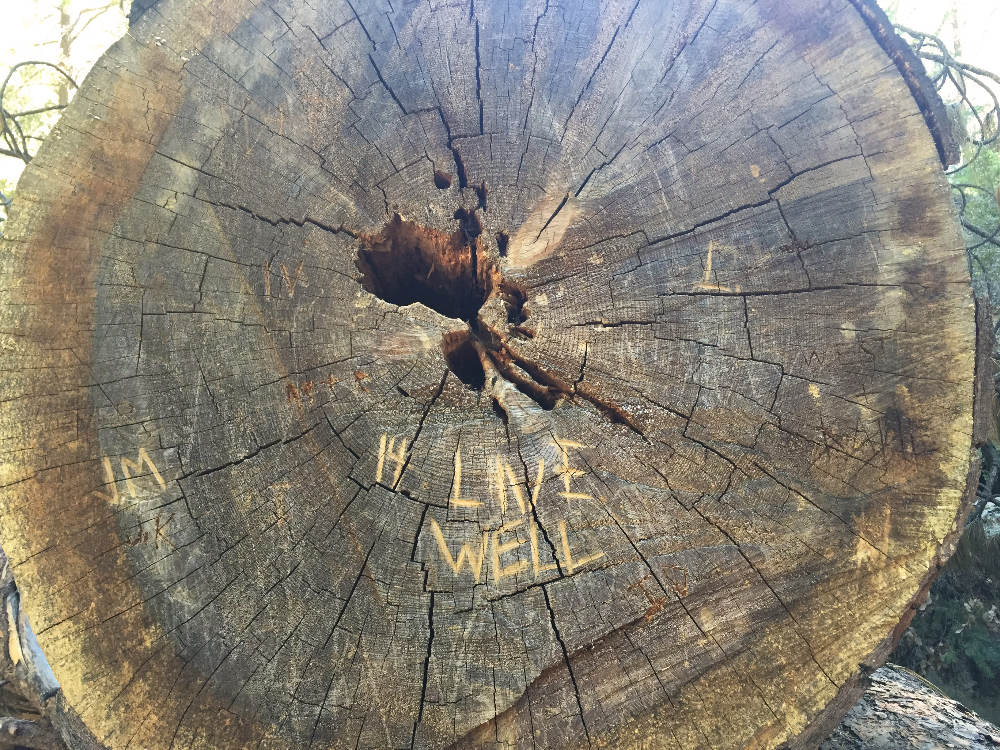

Reduce•Reuse•Recycle•Regenerate
Reduce, reuse, and recycle. Add a fourth: regenerate. We focus on upcycling products to be environmentally conscientious, but what about upcycling the primary resource: you. Join me on this multifaceted journey down ever-winding roads of intrigue and determination as I explore what I expect to be a lifelong midlife crisis starting in my late twenties.
Contact me: vasquez.roxanne@gmail.com